← 返回阅读库 · 原论文目录
论文讲解阅读文档 · 表征学习 · v206
Theia: Distilling Diverse Vision Foundation Models for Robot Learning
视频时长 00:08:03；讲解文字 3,846 字符；提取讲解画面 119 张。按视频原顺序阅读，每段文字保留时间戳。
文字来自整段视频的自动语音转写，按自然停顿分段，并与 PPT / 论文页面 / 演示画面对齐。未将讲解压缩为摘要；术语、数字和口述公式请结合画面及原论文核对。 阅读稿已校正规范部分明确术语误识别；原始逐字稿和每处修改记录另行保留。
讲解画面为源视频截图（640×360），不是可编辑 PPT 文件。全片按每秒 2 帧扫描内容变化，逐步展开页保留；连续动画保留代表画面。清晰度受源视频限制。
下载完整资料包 · 含离线 HTML、PDF、Word、全部 PPT 画面和字幕。
原论文与材料
Theia: Distilling Diverse Vision Foundation Models for Robot Learning · 下载完整 PDF（25 页）
按时间阅读
00:00:00–00:00:05 · 画面 001
00:00:00–00:00:05 · 画面 001大家好，今天我们来快速介绍一篇论文 Theia: Distilling Diverse Vision Foundation Models for Robot Learning。这篇，你从标题也可以看出来，就是把我们各种 Vision Foundation Model 都拿过来蒸馏到一个小的 Vision Encoder 里面。这个 Vision Encoder 理论上就应该对我们的后续的 Robot Learning 有帮助。这是一个思路上非常直接的文章。下面我们直接来看，就像我们之前说的
00:00:05–00:00:06 · 画面 002
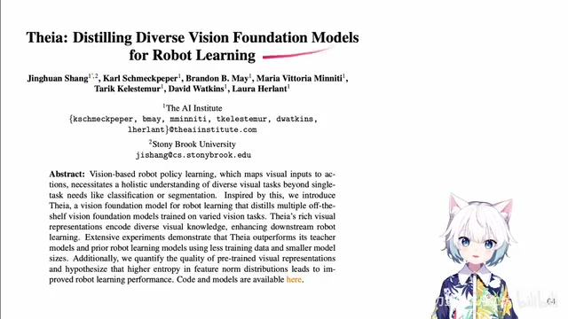
00:00:05–00:00:06 · 画面 00200:00:06–00:00:12 · 画面 003
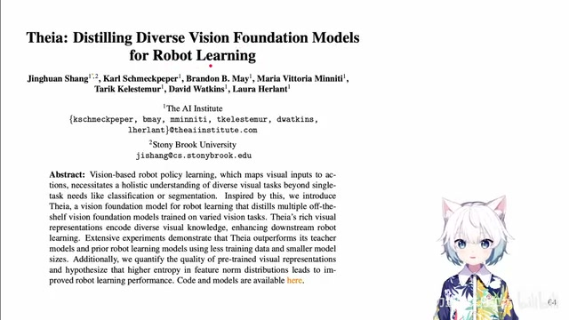
00:00:06–00:00:12 · 画面 00300:00:12–00:00:17 · 画面 004
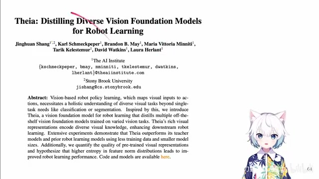
00:00:12–00:00:17 · 画面 00400:00:17–00:00:23 · 画面 005
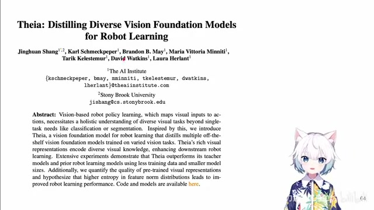
00:00:17–00:00:23 · 画面 00500:00:23–00:00:27 · 画面 006
00:00:23–00:00:27 · 画面 006一个好的 vision encoder 能够帮助我们学到一个很好的 policy 就是只要你的 representation 足够好你后面学 policy 就不费劲但是呢在实际的应用中你拿 reinforcement learning 也好你拿 imitation learning 也好这些东西呢去训出来的这个 vision encoder 往往它都不是一个最好的结果所以本文的核心呢就是我们既然已经有这么多已经有现成了在不同的任务上训练出来的这些好的 vision encoder
00:00:27–00:00:28 · 画面 007
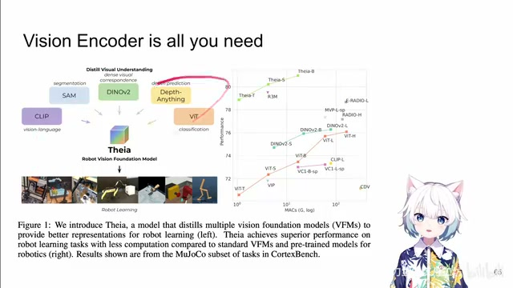
00:00:27–00:00:28 · 画面 00700:00:28–00:00:40 · 画面 008
00:00:28–00:00:40 · 画面 00800:00:40–00:00:42 · 画面 009
00:00:40–00:00:42 · 画面 00900:00:42–00:00:53 · 画面 010
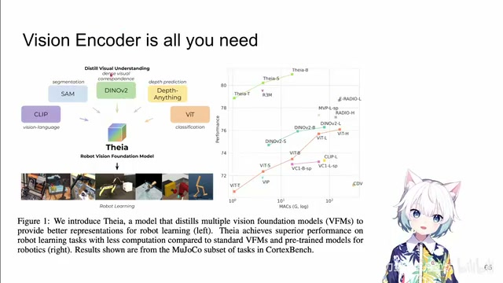
00:00:42–00:00:53 · 画面 010我们为什么不把他们拿过来啊都来用一用来帮助我们的这个 robot learning 这个过程呢这个呢也就是本文的核心的思想就是通过蒸馏的方法把所有的这些啊在这些特定的任务上训练出来的这些 foundation model 拿过来作用在我们的这个 robot learning 上啊让他们共同帮助我们蒸馏出一个好的 vision encoder 来做我们后面的机器学习
00:00:53–00:00:54 · 画面 011
00:00:53–00:00:54 · 画面 01100:00:54–00:00:58 · 画面 012
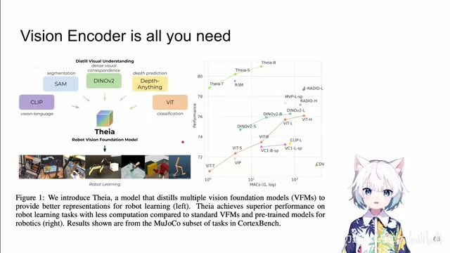
00:00:54–00:00:58 · 画面 01200:00:58–00:01:07 · 画面 013
00:00:58–00:01:07 · 画面 01300:01:07–00:01:08 · 画面 014
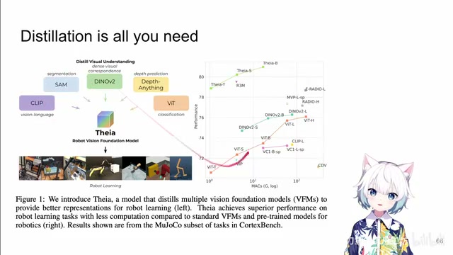
00:01:07–00:01:08 · 画面 01400:01:08–00:01:16 · 画面 015
00:01:08–00:01:16 · 画面 01500:01:16–00:01:17 · 画面 016
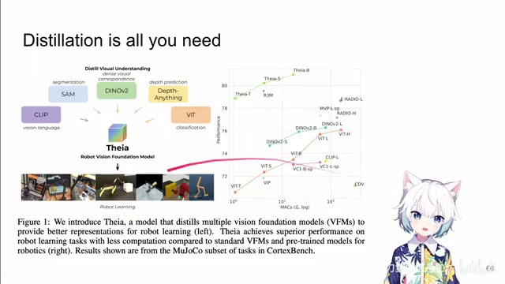
00:01:16–00:01:17 · 画面 016这个就是本文的核心的思路当然你看蒸馏出来的结果肯定是比单个的这些 representation 要好对吧那么这个就是本文的核心的思想那么下面我们就来具体来看这个蒸馏是怎么发生的就是我们的
00:01:17–00:01:24 · 画面 017
00:01:17–00:01:24 · 画面 01700:01:24–00:01:26 · 画面 018
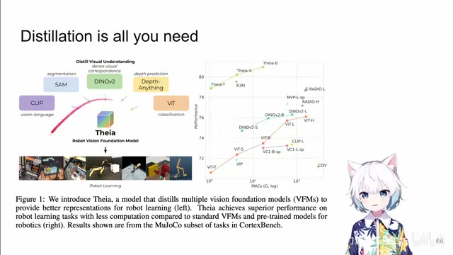
00:01:24–00:01:26 · 画面 01800:01:26–00:01:30 · 画面 019
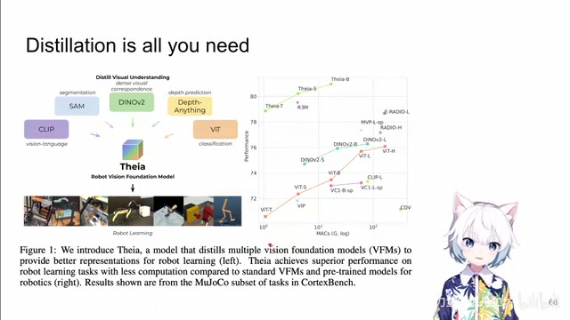
00:01:26–00:01:30 · 画面 01900:01:30–00:01:42 · 画面 020
00:01:30–00:01:42 · 画面 020一个图像送我们想要蒸馏的这个 encoder 那得到一个 representation 这个 representation 要跟我们各个 foundation model 它出来的结果要很像但是本文的设计呢并不是直接把我们的 representation 就跟我们的 foundation model 的输出做比较了而是它中间有一个这个叫 feature translator 这样子呢通过不同的 translator
00:01:42–00:01:43 · 画面 021
00:01:42–00:01:43 · 画面 02100:01:43–00:01:48 · 画面 022
00:01:43–00:01:48 · 画面 02200:01:48–00:01:49 · 画面 023
00:01:48–00:01:49 · 画面 02300:01:49–00:01:53 · 画面 024
00:01:49–00:01:53 · 画面 024来让这几个 foundation model 能够有一个调停的空间而他们的信息不至于相互打架这个呢是本文的一个模型的设计非常直接那么你在这一步蒸馏完了之后呢你拿了这个 representation 拿了这个 encoder 你就可以去用它来加一个 policy head 来做这些下游的这个学习的任务这个呢就是本文的一个模型非常直接的一个设计
00:01:53–00:01:55 · 画面 025
00:01:53–00:01:55 · 画面 02500:01:55–00:02:00 · 画面 026
00:01:55–00:02:00 · 画面 02600:02:00–00:02:01 · 画面 027
00:02:00–00:02:01 · 画面 02700:02:01–00:02:08 · 画面 028
00:02:01–00:02:08 · 画面 02800:02:08–00:02:12 · 画面 029
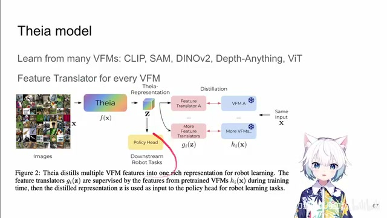
00:02:08–00:02:12 · 画面 02900:02:12–00:02:13 · 画面 030
00:02:12–00:02:13 · 画面 03000:02:13–00:02:18 · 画面 031
00:02:13–00:02:18 · 画面 03100:02:18–00:02:24 · 画面 032
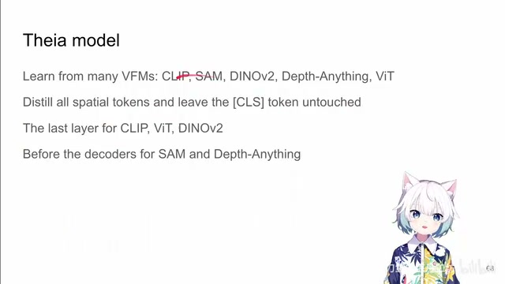
00:02:18–00:02:24 · 画面 032那这里呢作者用来蒸馏的就是这五个模型 clip 它是图文相关的 sam segmentation 相关的 dino 是一个经典的经典的图像理解包括这个监督学习出来的 vit 还有这个 depth 等等等等把这些东西都拿进来那么注意这里的蒸馏呢有一个小的设计就是它不是蒸馏 classification token
00:02:24–00:02:26 · 画面 033
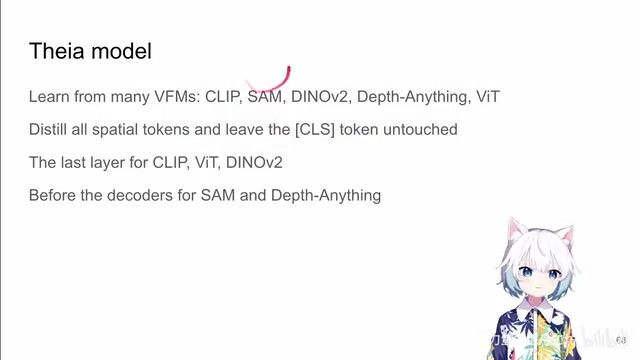
00:02:24–00:02:26 · 画面 03300:02:26–00:02:30 · 画面 034
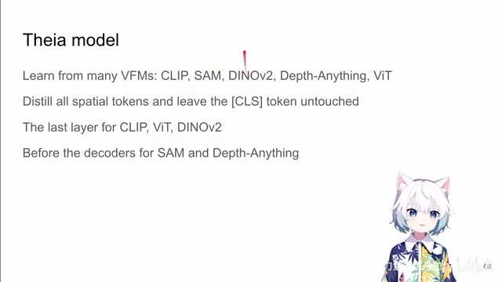
00:02:26–00:02:30 · 画面 03400:02:30–00:02:34 · 画面 035
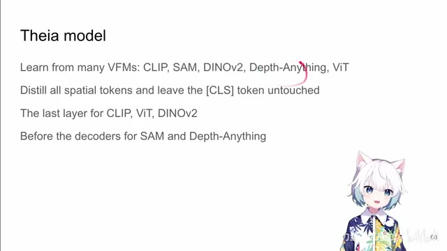
00:02:30–00:02:34 · 画面 03500:02:34–00:02:38 · 画面 036
00:02:34–00:02:38 · 画面 03600:02:38–00:02:39 · 画面 037
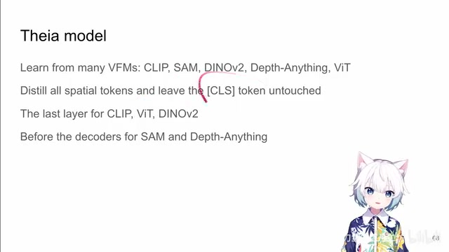
00:02:38–00:02:39 · 画面 03700:02:39–00:02:40 · 画面 038
00:02:39–00:02:40 · 画面 03800:02:40–00:02:46 · 画面 039
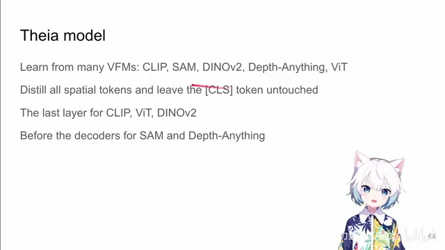
00:02:40–00:02:46 · 画面 039啊他是蒸馏的所有的这些图像代表的像素的这些 spatial tokens 就是一个 vit 吗他的每一个 patch 他的 embedding 啊跟这些 vit base 的这些 model 他们的这个 embedding 对齐那具体来说呢就是对这三个模型
00:02:46–00:02:50 · 画面 040
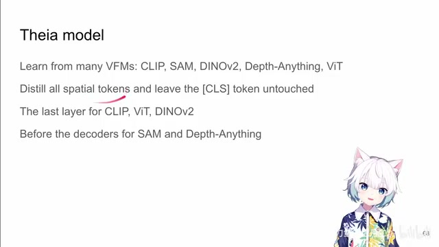
00:02:46–00:02:50 · 画面 04000:02:50–00:02:52 · 画面 041
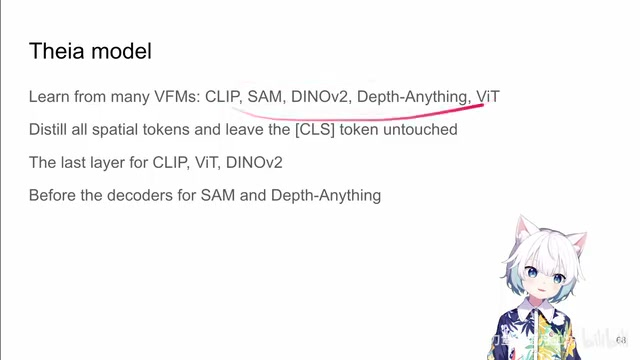
00:02:50–00:02:52 · 画面 04100:02:52–00:03:01 · 画面 042
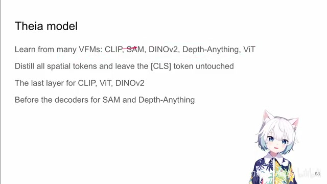
00:02:52–00:03:01 · 画面 042啊我们用他们的最后一层的输出也就是每一个 patchembedding 和我们这个 Theia 本身这个模型的输出他的 embedding 啊做蒸馏那么这两个模型呢就是用 decoder 前面的也是也也就是那个 encoder 输出的最后一层啊跟我们的这个 Theia 做蒸馏
00:03:01–00:03:02 · 画面 043
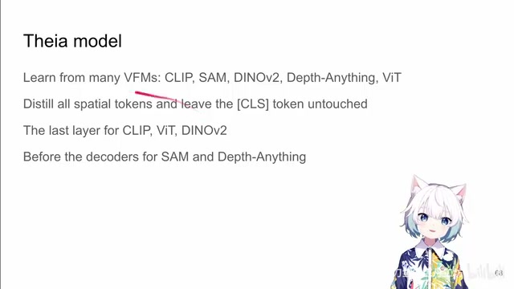
00:03:01–00:03:02 · 画面 04300:03:02–00:03:12 · 画面 044
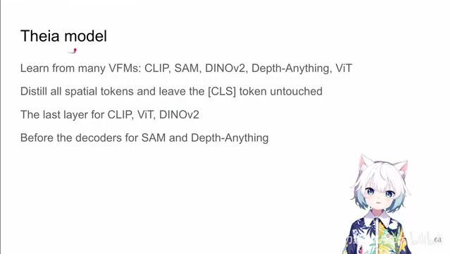
00:03:02–00:03:12 · 画面 04400:03:12–00:03:13 · 画面 045
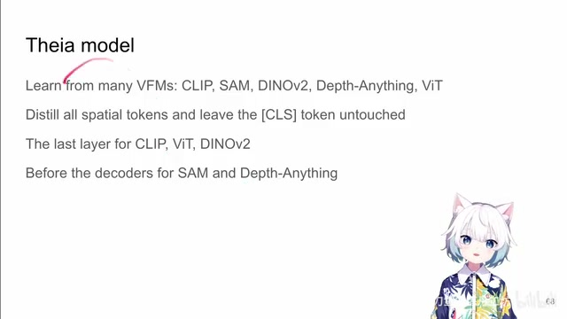
00:03:12–00:03:13 · 画面 04500:03:13–00:03:20 · 画面 046
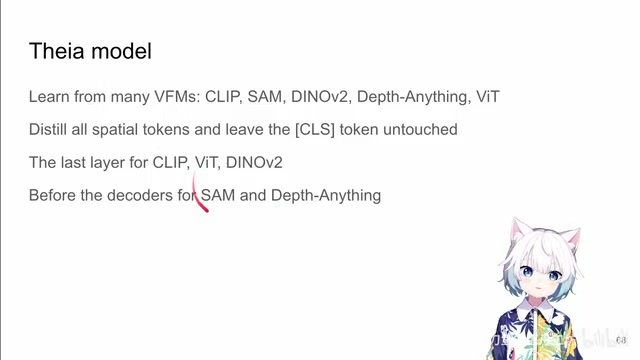
00:03:13–00:03:20 · 画面 046那这样也就意味着我们蒸馏的时候呢是一个非常稠密的 patch by patchtoken by token 这样的一个蒸馏的方式，那么在这种情况下呢你就不要再使用 MLP 了，这里呢作者用的是一个 convolution 的一个结构，用这个东西做这个 translator。
00:03:20–00:03:25 · 画面 047
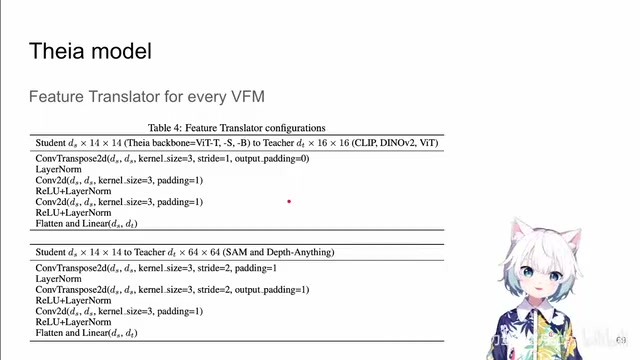
00:03:20–00:03:25 · 画面 04700:03:25–00:03:26 · 画面 048
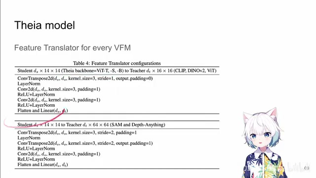
00:03:25–00:03:26 · 画面 04800:03:26–00:03:34 · 画面 049
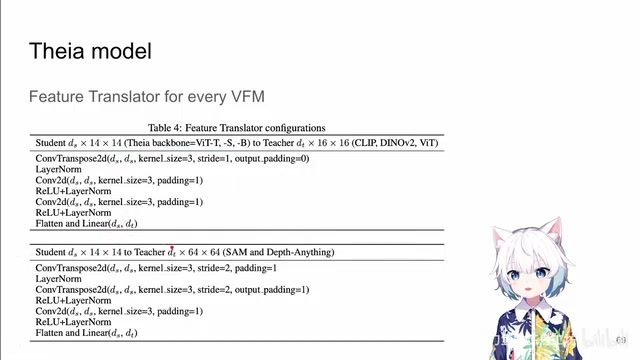
00:03:26–00:03:34 · 画面 049把我们的 Theia 的这个 representation 和其他各个 teacher 的 representation 给它结合对齐起来，这是他们具体的结构，看到是一个 convolution，它的要点就在于去学一个全局的稠密的 embedding 跟这些 teacher 对齐，这个呢是本文的设计。
00:03:34–00:03:38 · 画面 050
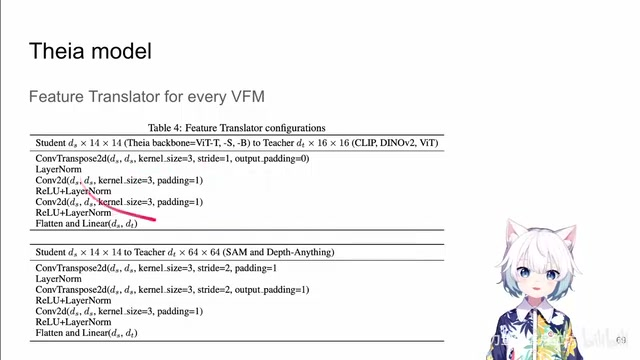
00:03:34–00:03:38 · 画面 05000:03:38–00:03:39 · 画面 051
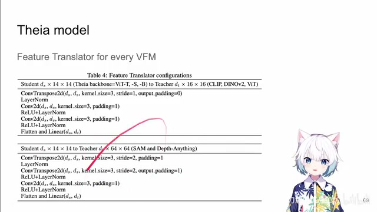
00:03:38–00:03:39 · 画面 05100:03:39–00:03:40 · 画面 052
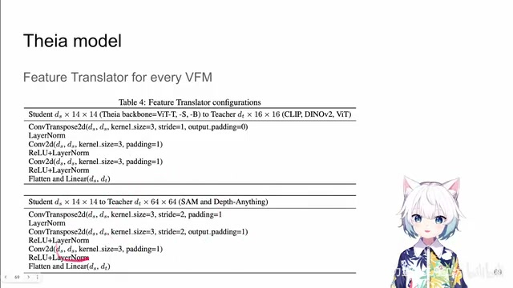
00:03:39–00:03:40 · 画面 05200:03:40–00:03:46 · 画面 053
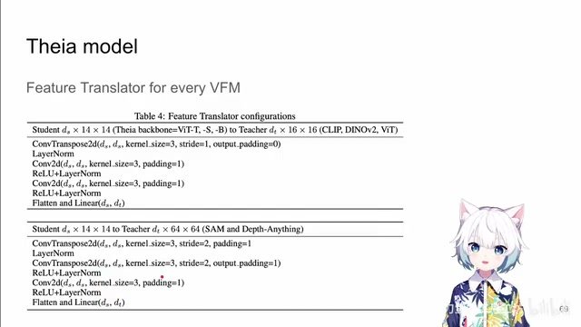
00:03:40–00:03:46 · 画面 05300:03:46–00:03:47 · 画面 054
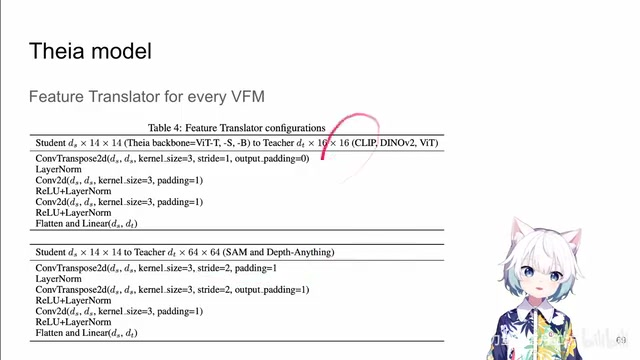
00:03:46–00:03:47 · 画面 05400:03:47–00:03:50 · 画面 055
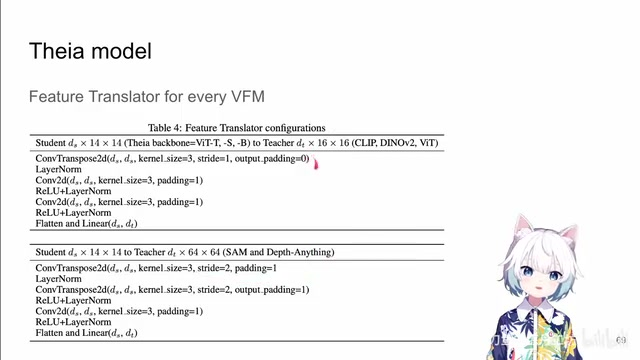
00:03:47–00:03:50 · 画面 055那么然后我们就来看到它的 loss 还有数据集了，蒸馏这里有很多的 teacher，这一作者选择 loss 就是 cosine similarity 加上 smooth L1，也就是说对于每一个模型来说 ，teacher 的输出跟我们的 Theia 的 encoder 加上 translator 它的输出我们做一个 cosine 过一个 L1，然后两个 loss 加起来，最后再把每一个 teacher loss 平均起来，这个就是总的 loss 的设计。
00:03:50–00:03:57 · 画面 056
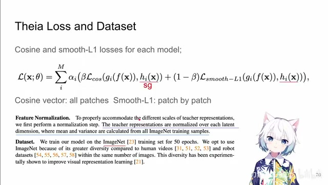
00:03:50–00:03:57 · 画面 05600:03:57–00:03:59 · 画面 057
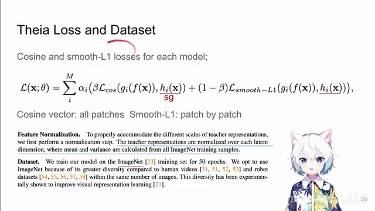
00:03:57–00:03:59 · 画面 05700:03:59–00:04:12 · 画面 058
00:03:59–00:04:12 · 画面 05800:04:12–00:04:13 · 画面 059
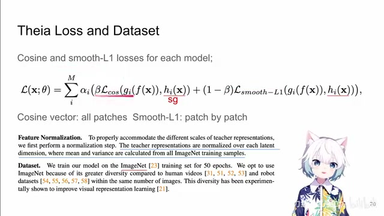
00:04:12–00:04:13 · 画面 05900:04:13–00:04:17 · 画面 060
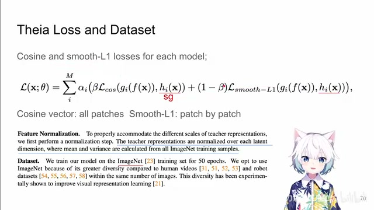
00:04:13–00:04:17 · 画面 06000:04:17–00:04:18 · 画面 061
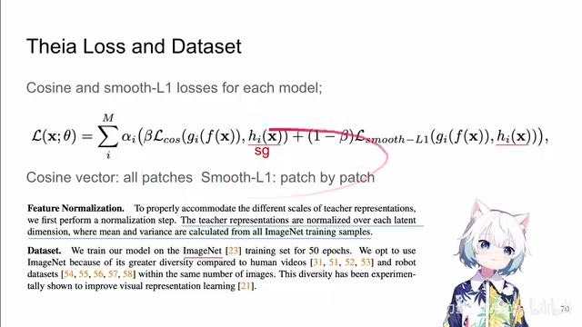
00:04:17–00:04:18 · 画面 06100:04:18–00:04:30 · 画面 062
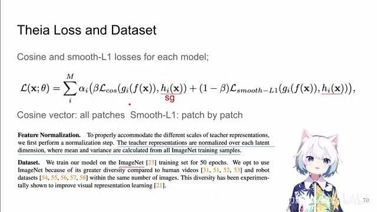
00:04:18–00:04:30 · 画面 062但是呢这里注意有两个小细节第一个就是就是我们的 teacher 模型它是冻住的不调整的所以你严谨来讲对吧这里加一个 stopgradient 可能会更好一点这是第一点那第二点就是这个地方就是我在算 cos similarity 的时候是所有的 patch 所有的 token 他们串成一个长的 token 然后一起算一个 cos similarity 这是这个但是这个 smooth l1 呢是每个 patch
00:04:30–00:04:32 · 画面 063
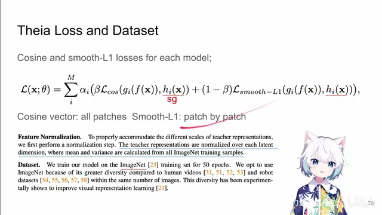
00:04:30–00:04:32 · 画面 06300:04:32–00:04:38 · 画面 064
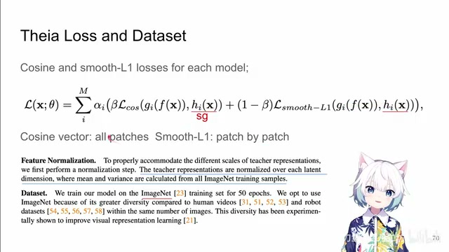
00:04:32–00:04:38 · 画面 06400:04:38–00:04:39 · 画面 065
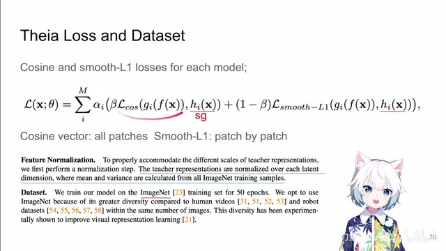
00:04:38–00:04:39 · 画面 06500:04:39–00:04:43 · 画面 066
00:04:39–00:04:43 · 画面 06600:04:43–00:04:44 · 画面 067
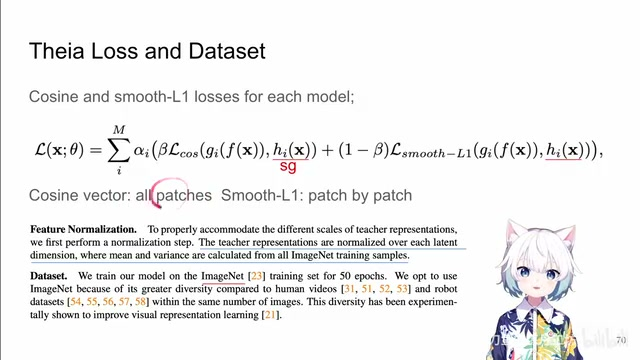
00:04:43–00:04:44 · 画面 06700:04:44–00:04:52 · 画面 068
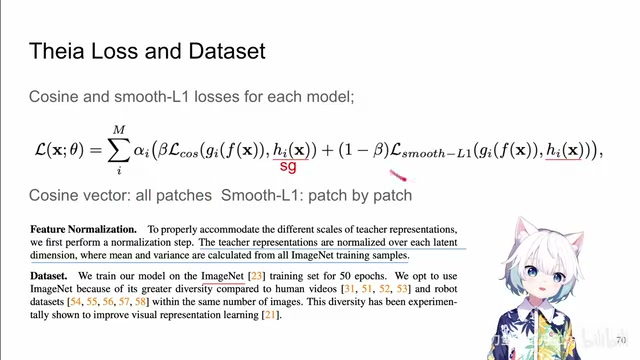
00:04:44–00:04:52 · 画面 068自己的这个 vector 单独的跟这个 teacher 这个 vector 来算的，这个是一个小的细节，然后呢这两个 loss 通过这个 beta 参数组合起来，这里 beta 取的是 0.9，这是它的这个 loss 的设计也是一个很直接的设计，那至于这个数据集呢，作者这里用的就是 ImageNet，只用了一个 ImageNet，那么此外呢还有一个小的细节就是 feature normalization，我们知道我们在做 ImageNet 图像处理的时候要把图像的像素先给它 normalize 一下。
00:04:52–00:04:53 · 画面 069
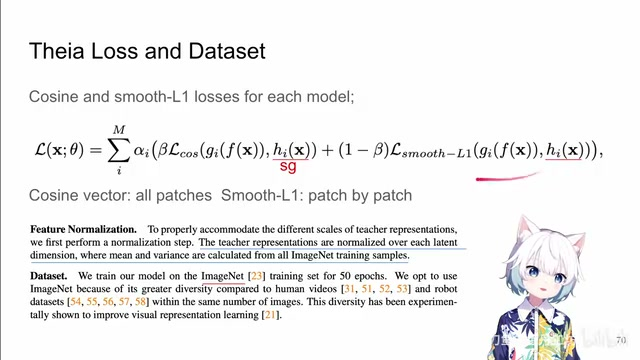
00:04:52–00:04:53 · 画面 06900:04:53–00:04:55 · 画面 070
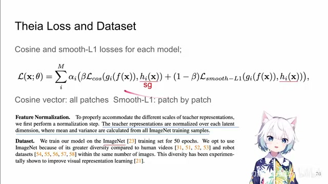
00:04:53–00:04:55 · 画面 07000:04:55–00:04:56 · 画面 071
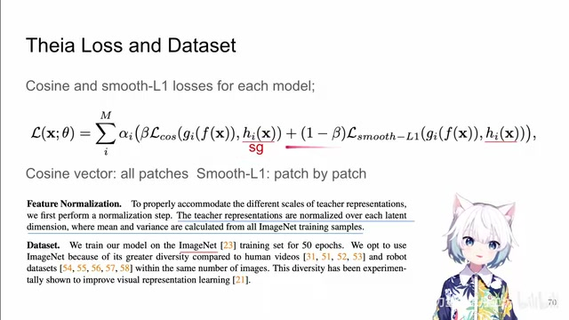
00:04:55–00:04:56 · 画面 07100:04:56–00:05:00 · 画面 072
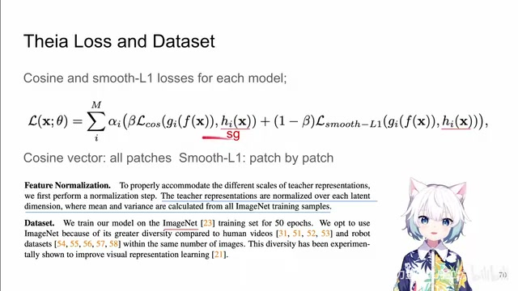
00:04:56–00:05:00 · 画面 07200:05:00–00:05:03 · 画面 073
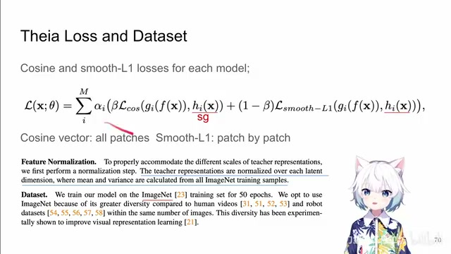
00:05:00–00:05:03 · 画面 07300:05:03–00:05:07 · 画面 074
00:05:03–00:05:07 · 画面 07400:05:07–00:05:11 · 画面 075
00:05:07–00:05:11 · 画面 07500:05:11–00:05:19 · 画面 076
00:05:11–00:05:19 · 画面 076然后呢再去送到我们的网络里做处理，那这里呢作者采用的相同的思想，只不过呢对的是每一个 teacher，他输出的 representation 他会统计每一个 teacher 出来的这个 feature 在 ImageNet 上的这个分布，然后呢根据这个分布根据这个分布的这个均值和方差呢来 normalize 每个 teacherrepresentation 的输出，这样子呢就能够保证我们每个 teacher 他输出的 representation 是尽量相互对齐的，是一个很关键的设计。
00:05:19–00:05:22 · 画面 077
00:05:19–00:05:22 · 画面 07700:05:22–00:05:41 · 画面 078
00:05:22–00:05:41 · 画面 07800:05:41–00:05:42 · 画面 079
00:05:41–00:05:42 · 画面 07900:05:42–00:05:50 · 画面 080
00:05:42–00:05:50 · 画面 080好的那么以上就是本文的主要的技术细节了非常直接的一个文章对吧你就把几个 teacher 抓过来大家做一个蒸馏按照这样一个小的细节在 ImageNet 上做一个蒸馏就好了那么下面我们来看作者汇报的一些结果那这里呢评价是这个 CortexBench、CortexBench 包括了这几个环境
00:05:50–00:05:51 · 画面 081
00:05:50–00:05:51 · 画面 08100:05:51–00:05:56 · 画面 082
00:05:51–00:05:56 · 画面 08200:05:56–00:06:02 · 画面 083
00:05:56–00:06:02 · 画面 083对吧，然后呢其中大部分都是 behavior cloning，只有这个 ImageNav 和这个 MobilePick 这两个做的是 reinforcement learning，那么还有这个真人世界的这个实验做的是 behavior cloning，结果呢你可以看一下对吧，你都争了这么多的信息进来肯定要比这些只用一个 loss 自己单独学的这些东西效果要好对吧，那这里呢作者还对比了要不要 train 这个 vision encoder 等等，感兴趣的朋友呢你可以到原文中去看他的实验的配置。
00:06:02–00:06:03 · 画面 084
00:06:02–00:06:03 · 画面 08400:06:03–00:06:07 · 画面 085
00:06:03–00:06:07 · 画面 08500:06:07–00:06:08 · 画面 086
00:06:07–00:06:08 · 画面 08600:06:08–00:06:13 · 画面 087
00:06:08–00:06:13 · 画面 08700:06:13–00:06:15 · 画面 088
00:06:13–00:06:15 · 画面 08800:06:15–00:06:20 · 画面 089
00:06:15–00:06:20 · 画面 08900:06:20–00:06:22 · 画面 090
00:06:20–00:06:22 · 画面 09000:06:22–00:06:23 · 画面 091
00:06:22–00:06:23 · 画面 09100:06:23–00:06:24 · 画面 092
00:06:23–00:06:24 · 画面 09200:06:24–00:06:31 · 画面 093
00:06:24–00:06:31 · 画面 09300:06:31–00:06:33 · 画面 094
00:06:31–00:06:33 · 画面 094这是主要的一个结果，那么当然后面还有 ablation，究竟哪个 foundation model 对我们的性能有帮助？这个是所有的 foundation model 都加上，这边是 5 个单独的 model，这边是所有的减去一个特定的 model 得到的结果，这边还有几个组合，很直接的一个对比，包括其他的 ablation，还有像我们的 loss 怎么设计对吧？用 L1 还是 MSEregister token
00:06:33–00:06:34 · 画面 095
00:06:33–00:06:34 · 画面 09500:06:34–00:06:41 · 画面 096
00:06:34–00:06:41 · 画面 09600:06:41–00:06:42 · 画面 097
00:06:41–00:06:42 · 画面 09700:06:42–00:06:49 · 画面 098
00:06:42–00:06:49 · 画面 09800:06:49–00:06:51 · 画面 099
00:06:49–00:06:51 · 画面 09900:06:51–00:06:57 · 画面 100
00:06:51–00:06:57 · 画面 10000:06:57–00:06:58 · 画面 101
00:06:57–00:06:58 · 画面 10100:06:58–00:07:06 · 画面 102
00:06:58–00:07:06 · 画面 102这个我们之前也介绍过对吧？加几个 register token 能够帮我们去掉在图像中相对比较平滑区域的一些比较突出的 token，这是一个设计，再就是用哪些 token 去做蒸馏？是把所有的 spatial token 都拿来蒸馏，还是去动这个 classification token？感兴趣的朋友呢，非常推荐你到原文查看。好的，那么总的来说呢，这一篇就是一个非常直接的
00:07:06–00:07:07 · 画面 103
00:07:06–00:07:07 · 画面 10300:07:07–00:07:10 · 画面 104
00:07:07–00:07:10 · 画面 10400:07:10–00:07:13 · 画面 105
00:07:10–00:07:13 · 画面 10500:07:13–00:07:14 · 画面 106
00:07:13–00:07:14 · 画面 10600:07:14–00:07:18 · 画面 107
00:07:14–00:07:18 · 画面 10700:07:18–00:07:25 · 画面 108
00:07:18–00:07:25 · 画面 108把各种我们认为可能对 Robot Learning 有帮助的这些 Foundation Model 都给它蒸馏进来，得到一个非常好的 Vision Encoder，帮助我们做各种机器人的任务
00:07:25–00:07:27 · 画面 109
00:07:25–00:07:27 · 画面 10900:07:27–00:07:31 · 画面 110
00:07:27–00:07:31 · 画面 11000:07:31–00:07:32 · 画面 111
00:07:31–00:07:32 · 画面 11100:07:32–00:07:37 · 画面 112
00:07:32–00:07:37 · 画面 112这是一个量化对吧？这个训练好的整理好的模型预测出来的东西跟我们原来的模型的输出的一个对比对吧？那么是一个非常直接的工作，那包括你想，你现在有了这么一个培训好的 Vision Encoder，它的能力比这些东西都强，你完全可以用它来去更新你的各种下游任务，这都是可以做的一个事情。好的，那么以上就是我对这篇文章一个非常快速的整理，那么感谢您的收看，请多多指点
00:07:37–00:07:39 · 画面 113
00:07:37–00:07:39 · 画面 11300:07:39–00:07:42 · 画面 114
00:07:39–00:07:42 · 画面 11400:07:42–00:07:48 · 画面 115
00:07:42–00:07:48 · 画面 11500:07:48–00:07:50 · 画面 116
00:07:48–00:07:50 · 画面 11600:07:50–00:07:57 · 画面 117
00:07:50–00:07:57 · 画面 11700:07:57–00:07:58 · 画面 118
00:07:57–00:07:58 · 画面 11800:07:58–00:08:03 · 画面 119
00:07:58–00:08:03 · 画面 119转写与来源说明 · 0 个自动复核提示
保留 21 个原始语音片段，0 个片段触发自动复核提示。提示仅用于定位可能的术语、重复或识别问题，不等于已确认错误。
讲解画面为源视频截图（640×360），不是可编辑 PPT 文件。全片按每秒 2 帧扫描内容变化，逐步展开页保留；连续动画保留代表画面。清晰度受源视频限制。
原视频：paper/合集_2026-10-16_表征学习/[论文速览]Theia Distilling Diverse Vision Foundation Models for Robot..[2407.20179].mp4
SHA-256：bfa8981cfc1d6b199eec8f1488e4840fe75679caa376c800e9173662aaf5547a
全文按视频语音与画面制作。原论文可从上方链接下载；完整资料包保留全文、原始逐字稿、字幕和校对记录。